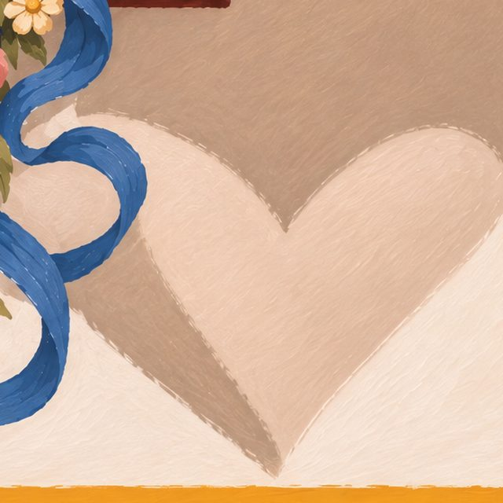
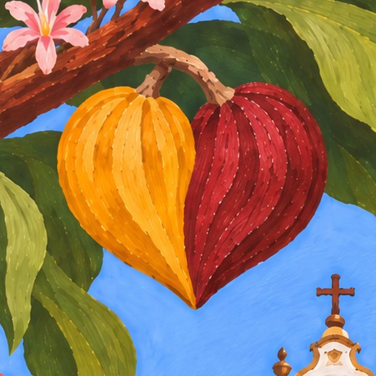
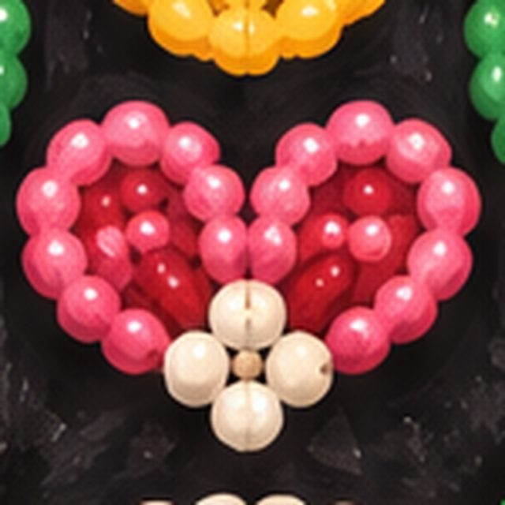
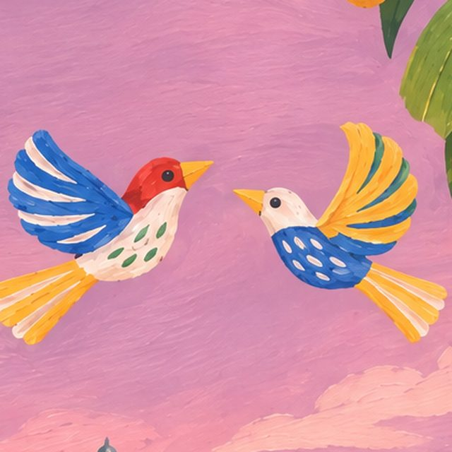
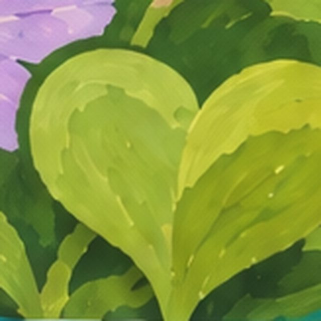
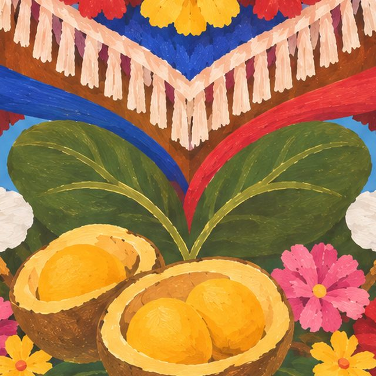
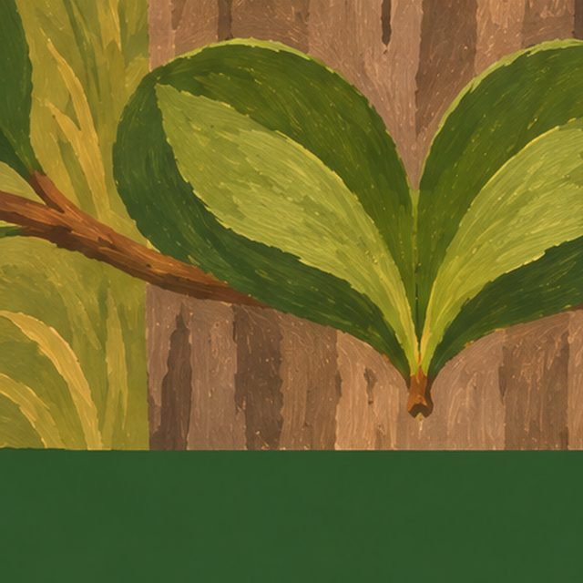

a coleção
Quatorze pares
Um par por estado, com a ilustração do lugar inteiro. Passe o mouse para ver o chinelo; clique para abrir o estado.
região 01 · 2 pares
Sudeste
Minas Gerais · Rio de Janeiro

região 02 · 4 pares
Nordeste
Bahia · Pernambuco · Ceará · Maranhão


região 03 · 3 pares
Norte
Amazonas · Pará · Tocantins


região 04 · 2 pares
Centro-Oeste
Mato Grosso do Sul · Goiás


região 05 · 3 pares
Sul
Paraná · Santa Catarina · Rio Grande do Sul


o fio da coleção
Onde o coração mora

Minas Geraisa sombra da veneziana aberta na parede caiada Rio de Janeiroduas folhas de amendoeira caindo juntas, ao lado do bonde
Rio de Janeiroduas folhas de amendoeira caindo juntas, ao lado do bonde
Bahiadois cacaus, um amarelo e um vinho, de pontas encostadas Pernambucoas pontinhas da franja da sombrinha de frevo
Pernambucoas pontinhas da franja da sombrinha de frevo Cearáum ponto da renda de bilro, na barra
Cearáum ponto da renda de bilro, na barra
Maranhãouma florzinha de miçanga no bordado do boi Amazonasos anéis de água em volta do boto
Amazonasos anéis de água em volta do boto
Parádois pássaros de miriti que voam um para o outro Tocantinsduas hastes de capim dourado que se cruzam
Tocantinsduas hastes de capim dourado que se cruzam
Mato Grosso do Suluma folha de aguapé na beira do rio de Bonito
Goiásduas folhas de pequi que se encontram sob o peito do cavalo Paranádois pinhões encostados na grama
Paranádois pinhões encostados na grama Santa Catarinaa cauda da baleia-franca na enseada de Garopaba
Santa Catarinaa cauda da baleia-franca na enseada de Garopaba
Rio Grande do Sulduas folhas de erva-mate ao pé do mourão